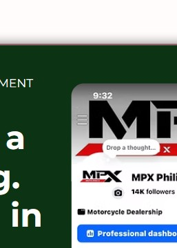
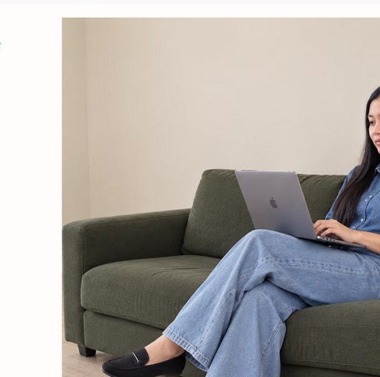
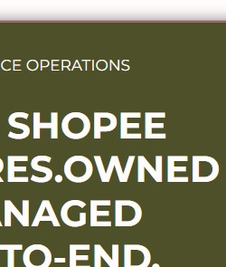

SOCIAL MEDIA MANAGEMENT
Building a following. Bringing in buyers.
MPX Philippines Official
6.9K → 14K Facebook followers
E-COMMERCE VIRTUAL ASSISTANT | SOCIAL MEDIA MANAGER
Bringing structure, consistency, and creativity from e-commerce support and social media management to content and customer communication. Let’s create a digital presence and grow your business together.

WORDS THAT MATTER
“I believe every brand has a story worth telling and a business worth building. I support small brands behind the scenes with e-commerce management and social media, keeping your store organized, your content engaging, and your daily operations running smoothly, so you’re ready to grow.”
SELECTED PROJECTS
SOCIAL MEDIA MANAGEMENT
MPX Philippines Official
6.9K → 14K Facebook followers
E-COMMERCE OPERATIONS
Listing, buyer chats, order processing, logistics, and after-sales support.
8,607 products sold in one shop
HOW I CAN SUPPORT YOUR BUSINESS
Product listing and descriptions, store updates, customer inquiries, order processing, shipping coordination, and after-sales support.
Content planning, page management, publishing, community engagement, customer messages, and performance monitoring.
Promotional graphics, product posts, stories, short-form video editing, and customer testimonial content using Canva and CapCut.
A LITTLE ABOUT ME
I’m April Joy, an E-commerce Virtual Assistant and Social Media Manager with hands-on experience supporting online selling and social media operations.
Since 2018, I’ve worked with e-commerce platforms, product listings, customer communication, order coordination, and social media content. I enjoy helping businesses stay organized, show up consistently online, and create a better experience for their customers.
My goal is to make your day-to-day operations easier, so you can focus on growing your business.
TOOLS I WORK WITH
LET'S WORK TOGETHER
Tell me what your business needs. I’d love to explore how I can support your team.
Get in touch →Replace this email address with your preferred professional contact email before publishing.